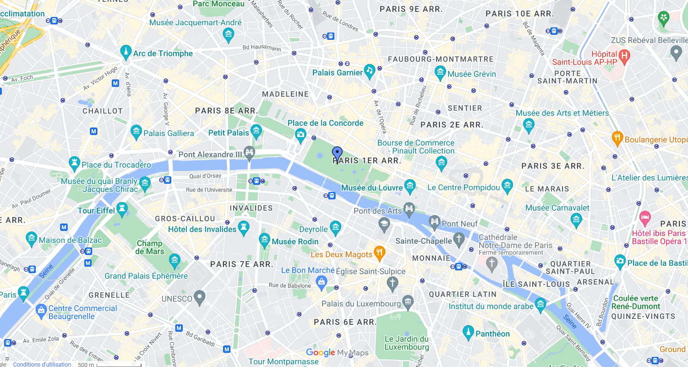

Le Jardin des Tuileries
Place de la Concorde - 75001 Paris
Louvre - 1er Arrondissement
Quelques clichés du lieu


Quelques transports se trouvant à proximité
Vous souhaitez visiter le Jardin des Tuileries mais vous ne savez pas comment vous-y prendre ? Aucune inquiétude, de nombreux types de transport vous permettent de vous y rendre.
Les lignes de transport suivantes ont des itinéraires qui passent près de Jardin des Tuileries
Train: lignes H, J et L.
Métro: lignes 1, 12 et 8.
Bus: 20, 45, 68, 72, 73, 84, 85 et 94.

Cliquez sur la carte pour la visualiser !